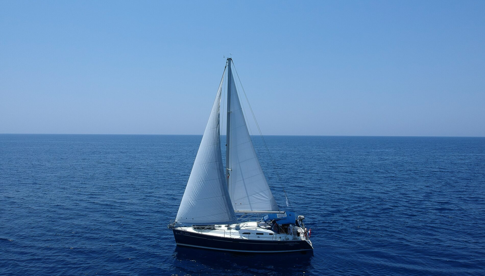

Descrizioni
Mi chiamo Alex Guernier, frequento la classe seconda di un istituto tecnico superiore e nel tempo libero mi dedico ai miei hobby preferiti: la fotografia, la cucina, la vela e la pallavolo. È da diversi anni che mi dedico a questi svaghi e ho pensato di aprire una pagina per condividere i miei pensieri.

Fotografia
Sono sempre stata appassionata di fotografia, fin da piccola mi divertivo a scattare foto utilizzando la macchinetta fotografica di mio papà. I miei soggetti preferiti sono il cielo, il mare e i fiori. Per me la cosa migliore delle fotografie è che vedendole dopo molto tempo ti tornano in mente i ricordi e le sensazioni di quel momento.
Sono sempre stata appassionata di fotografia, fin da piccola mi divertivo a scattare foto utilizzando la macchinetta fotografica di mio papà. I miei soggetti preferiti sono il cielo, il mare e i fiori. Per me la cosa migliore delle fotografie è che vedendole dopo molto tempo ti tornano in mente i ricordi e le sensazioni di quel momento.

Cucina
Appena ho l’occasione di avere un pomeriggio libero, e tutti gli ingredienti per preparare una pietanza, mi dirigo in cucina. Mi piace soprattutto cucinare dolci e biscotti, ma non solo, anche i classici cibi per il pranzo e la cena. È un bel passatempo e poi nel momento dell’assaggio mi piace ascoltare le opinioni altrui per sapere cosa migliorare.
Appena ho l’occasione di avere un pomeriggio libero, e tutti gli ingredienti per preparare una pietanza, mi dirigo in cucina. Mi piace soprattutto cucinare dolci e biscotti, ma non solo, anche i classici cibi per il pranzo e la cena. È un bel passatempo e poi nel momento dell’assaggio mi piace ascoltare le opinioni altrui per sapere cosa migliorare.

Vela
Andare in barca a vela è il mio sport preferito. Abitando in una cittadina marittima ho sempre l’opportunità di concedermi questo svago. Lo trovo molto rilassante poiché, trovandomi in mezzo al mare, sono lontana da tutte le persone, e le uniche cose che rimangono sono il suono dell’acqua, il vento e i lontani vocii della gente.
Andare in barca a vela è il mio sport preferito. Abitando in una cittadina marittima ho sempre l’opportunità di concedermi questo svago. Lo trovo molto rilassante poiché, trovandomi in mezzo al mare, sono lontana da tutte le persone, e le uniche cose che rimangono sono il suono dell’acqua, il vento e i lontani vocii della gente.

Pallavolo
Un altro passatempo che mi piace molto è giocare a pallavolo. Basta avere una palla, una rete e un'altra persona che partecipi ed il gioco è fatto. La pallavolo per me è sia un divertimento che uno sfogo, quando ne ho la possibilità ci passo interi pomeriggi ed è anche l’opportunità di migliorare i miei fondamentali.
Un altro passatempo che mi piace molto è giocare a pallavolo. Basta avere una palla, una rete e un'altra persona che partecipi ed il gioco è fatto. La pallavolo per me è sia un divertimento che uno sfogo, quando ne ho la possibilità ci passo interi pomeriggi ed è anche l’opportunità di migliorare i miei fondamentali.
...alcune citazioni
"Il punto principale di scattare foto è di non dover spiegare le cose con le parole."
(Elliott Erwitt)
(Elliott Erwitt)
"Impara a cucinare, prova nuove ricette, impara dai tuoi errori, non avere paura, ma soprattutto divertiti."
(Julia Child)
(Julia Child)
"Il mare è ciò che mi circonda. Mi guidano il suo odore, il soffiare del vento, lo sbattere delle vele."
(Raul Pietrobon)
(Raul Pietrobon)
"Se stai perdendo, ogni punto che ottieni ti da la capacità di non mollare mai."
(Luigi Mastrangelo)
(Luigi Mastrangelo)